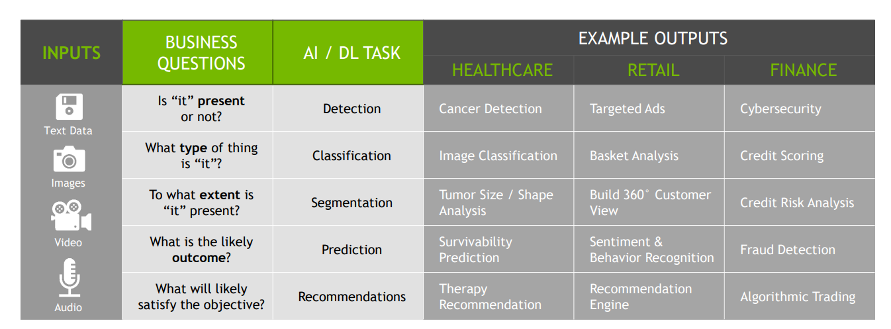
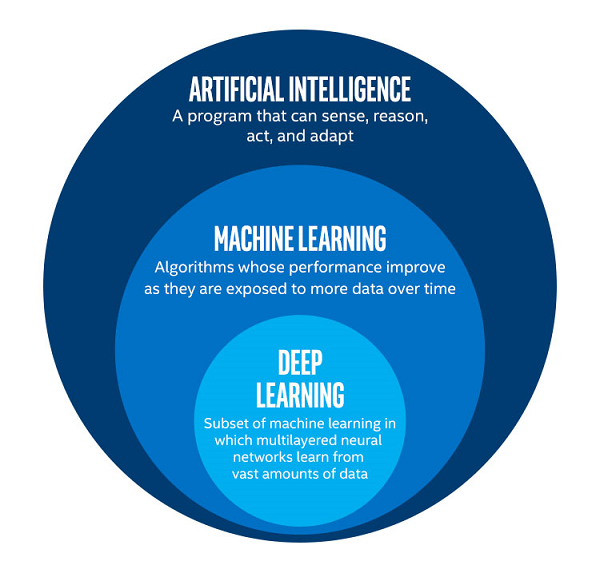
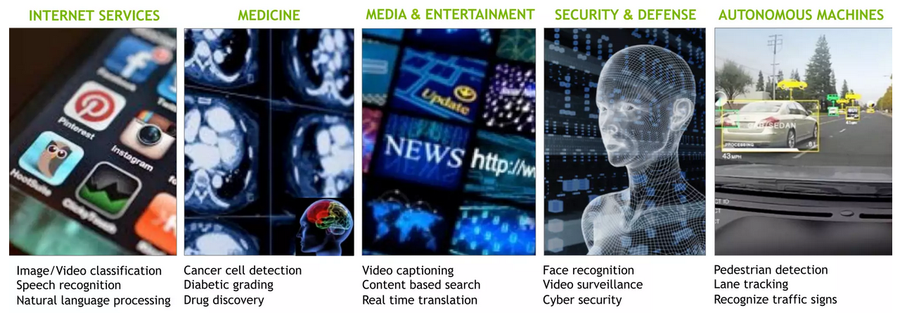

Overview
Introduction to AI,ML,DL
Data science and statistics - are two of the same, except that in earlier days, Data Science as we know it today, was called “statistical data analysis” or “applied statistics”. “Data Scientist” means a professional who uses scientific methods to liberate and create meaning from raw data. “Statistics” means the practice or science of collecting and analyzing numerical data in large quantities. There are no real difference between the two, except that “Data Scientists” prowes in large scale data or Big Data and fast computing. Otherwise, they are the same, if “statisticians” plowe their trade in the same manner. Today, there are no difference between the two. 1
The disciplines of Data Science requires knowledge and skills in the following:
- Data Gathering, Preparation, and Exploration
- Computing with Data
- Data Modeling
- Data Visualization and Presentation
- Science about Data Science
AI Overview
AI is everywhere!
Some notable examples:
- google lens (region proposal network)
- google translate (Transformer-based)
- YouTube automatic captioning (automatic speech recognition)
- Gmail spam filters (rule-based filters + Density clustering)
- apple’s faceID (deep convolutional networks)
- Tesla autonomous car (deep learning)
- virtual assistant (Siri, Google Assistant)
- NVIDIA DLSS (Deep learning supersampling)
- Bloomberg (NLP sentiment analysis)
AI vs ML vs DL

Deep learning is a subfield of machine learning, which is, in turn, a subfield of artificial intelligence (AI).
The central goal of AI is to provide a set of algorithms and techniques that can be used to solve problems that humans perform intuitively and near automatically. A great example of such a class of AI problems is interpreting and understanding the contents of an image – this task is something that a human can do with little-to-no effort, but it has proven to be extremely difficult for machines to accomplish.
Machine learning is subfield tends to be specifically interested in pattern recognition and learning from data.
Artificial Neural Networks (ANNs) are a class of machine learning algorithms that learn from data and specialize in pattern recognition, inspired by the structure and function of the brain.
Deep learning is an approach to AI. It is a type of machine learning, a technique that allows computer systems to improve with experience and data.
Data Scientist vs Machine Learning Engineer
What data scientist do is the same as Machine Learning engineer except machine learning engineer will implement any machine learning model in production environment using suitable tools like restful API, SDK or lately via serverless model.
| Data Scientist | ML/AI Engineer |
|---|---|
| Data science is the description, prediction, and causal inference from structure & unstructure data. This domain helps individuals and enterprise make better decision |
enabling software to become highly accurate in predicting outcome (accomplishing task) |
| does statistical analysis, data story telling compare multiple ML model to help business to achieve growth |
Make ML model in prod environment (MVP) build programs that identify patterns based on input data |
AI use cases, cross domain

Question and homework for the course can be found using the QR code.
Footnotes
@Donoho17↩︎